News
Read from the outside in, like a core: the most recent ring first.
-
Open postdoc position
We are looking for a postdoc to join the group. If you work on long-term forest research, large-scale data analysis, or diversity and stability across European forests, we would like to hear from you. Two years, with possible extension depending on funding.
Download the position flyer (PDF) -
New paper in Nature Climate Change
Co-authored by the group: we combined tree-ring records from 45 species — over 120,000 trees — with global range-shift observations and hydraulic trait data. A species' hydraulic strategy predicts which way it moves under warming: climate-sensitive species track warming upslope, while stress-resistant ones expand downslope.
Read the paper -
Regeneration niche paper is out
We modelled the environmental requirements of juveniles and adults of 43 tree species across Switzerland using the Swiss National Forest Inventory, and found remarkable niche stability across life stages — pointing to higher forest resilience to climate change through demographic flexibility.
Read the paper -
Fieldwork in Spain completed
Busy weeks in Spanish forests: more than 25 new plots across the Iberian Peninsula, including some of the finest forests in the Mediterranean.

-
Justin Harden wins a ThinkSwiss grant
Congratulations to Justin. He joins the group for summer 2026 to work on micro-XRF dendrochronology and the ecological role of autofluorescent structures in tree physiology.
Justin's lab page -
Will longer growing seasons increase tree growth everywhere?
Probably not — and in this paper we set out why, and how the field might go about answering a question this tangled.
Read the paper
People
-
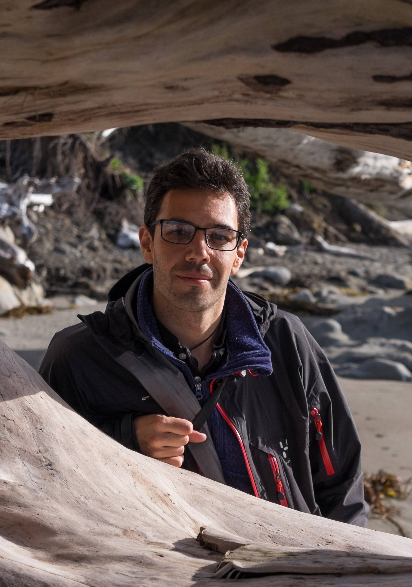
Rubén D. Manzanedo
Principal investigatorAssistant Professor at the Institute of Plant Sciences, University of Bern. Rubén works on how forested ecosystems respond to environmental change across scales. BSc and MSc in Forestry and Global Change at the University of Córdoba, PhD in tree local adaptation at Bern, then postdocs at Harvard, the University of Washington and ETH Zürich.
-

Zabdi López
PhD studentZabdi works within the OpenRing project on long-term open forest data and tree responses to climate change across Europe. He studied in Guatemala and Norway, and joined the lab in November 2024.
-
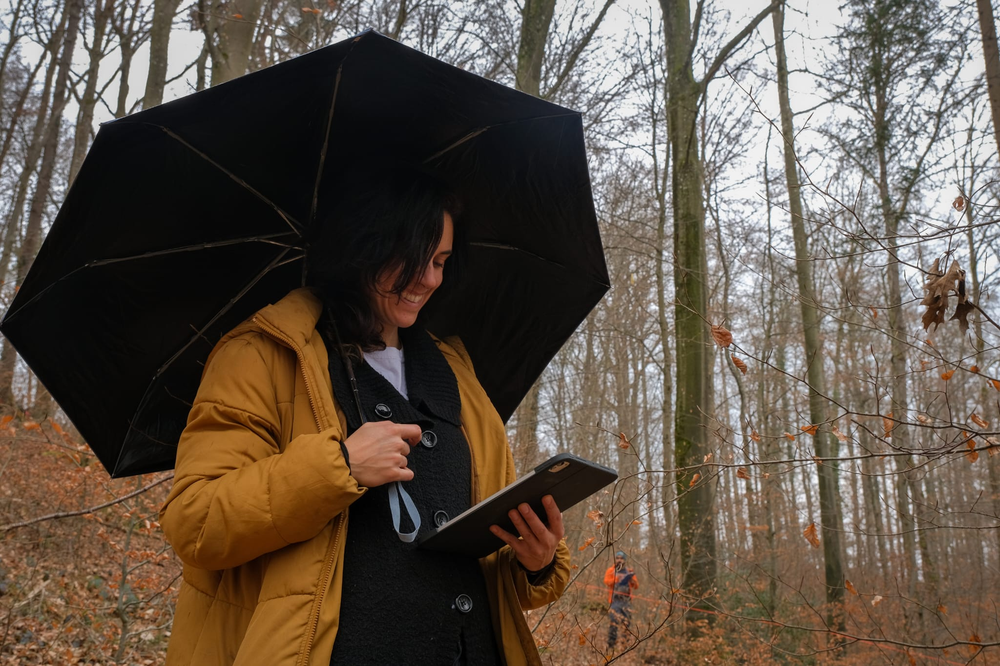
Miriam Frutiger
TechnicianMiriam provides the group's technical support in the field and in the lab. Her interests span forest ecology, insect ecology and art. She did her BSc at Bern and has since worked across a wide range of projects at the Institute of Plant Sciences.
-
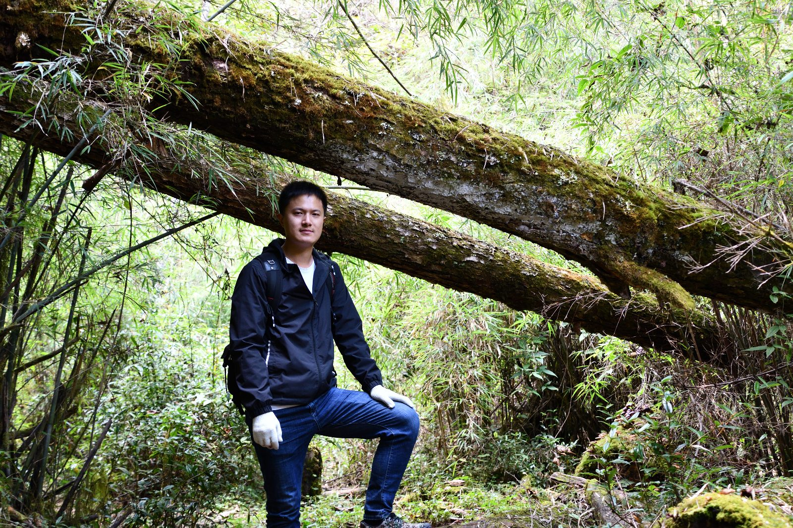
Jiajia Su
Visiting postdocVisiting from Sun Yat-sen University, Jiajia works on macroecological responses to climate change in Chinese subtropical forests: long-term responses, shifting population dynamics, and the role of soil and drought. Publications.
-
Cecilia Hofmann
PhD student, WSLCecilia's PhD asks how climate change alters the physiological performance of European mountain tree species. Combining tree-ring isotope analysis with experiments along elevational gradients, she identifies species-specific thresholds to support climate-adaptive forest management. Profile.
-
Nora Bisang
MSc studentNora's thesis investigates how climate-change responses vary among dominant European tree species, comparing climate vulnerability across populations and examining how competition and local context shape responses to rising climate stress.
-
Patricia Martínez Soler
BSc studentPatricia's thesis explores the links between biodiversity, ecosystem stability and site characteristics, focusing on understorey vegetation and age-class variability, to sharpen the link between ecological traits and forest resilience.
-
Matteo Trachsel
BSc studentMatteo's thesis looks at patterns of heavy-metal deposition recorded within tree rings across Switzerland.
-
Savannah Goetsch
MSc · 2024–2025
Explored the regeneration niche of the main Swiss tree species using repeated Swiss NFI inventory data, in collaboration with WSL.
-
Giacomo Colasurdo
Visiting student, University of Milan · 2024
Worked on the collection and analysis of ecological metadata for forest responses to climate change.
Research
Four lines the group is running right now. Earlier work is listed under publications.
-
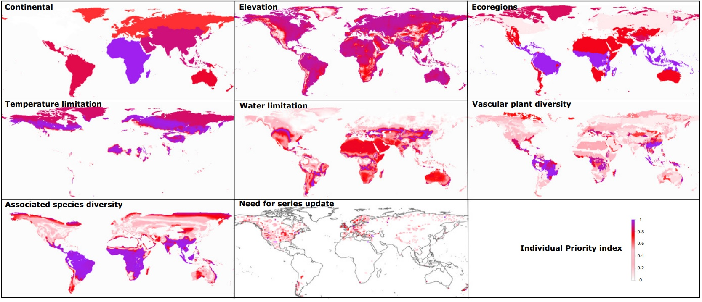
Big long-term ecological data
An ERC Starting project, now transferred to an SNSF Starting Grant, aimed at improving the representativity and availability of long-term tree-growth data across European forest populations.
Started in September 2024, it builds on our work harmonising the largest dendrochronological databases and developing methods to reduce their biases over time.
Most recent paper -
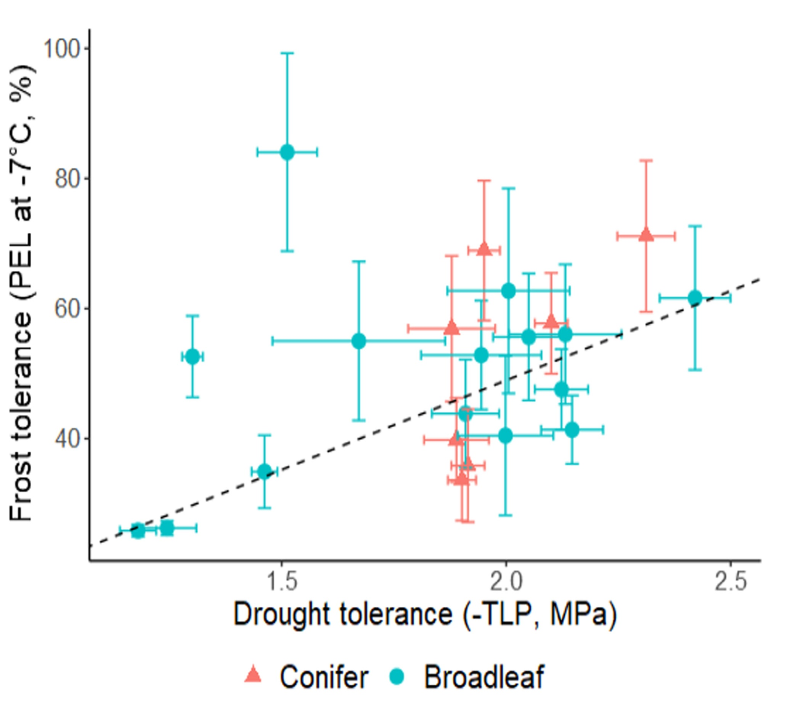
The regeneration niche
How do trees change their environmental requirements as they grow, and what does that mean for how forest populations respond to climate change?
See the work led by Kristiina Visakorpi on trade-offs between tolerance to multiple extremes, comparing modelled and experimental tolerances across European tree species.
Manzanedo et al. systematically model the habitat of 42 species across 30 years of Swiss inventory data to test how general ontogenetic niche shifts really are.
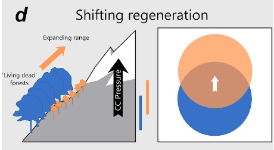
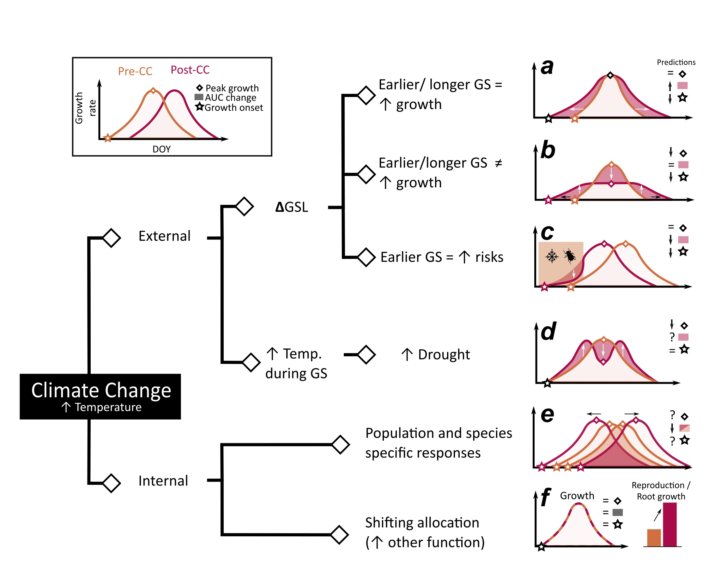
-
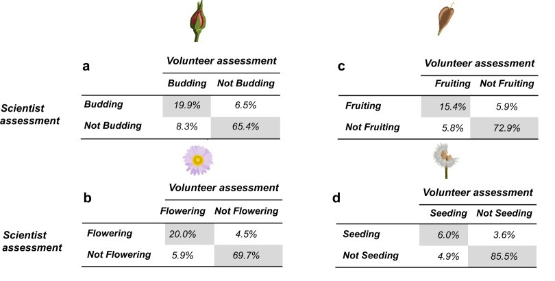
Alpine phenology
How does the phenology of alpine flower communities respond to a warmer climate, and how does that change the ecosystem services they provide — including the experience of visiting a protected area?
See our work using citizen-science data from Mount Rainier National Park, part of the long-running MeadoWatch project led by Prof. Janneke Hille Ris Lambers.
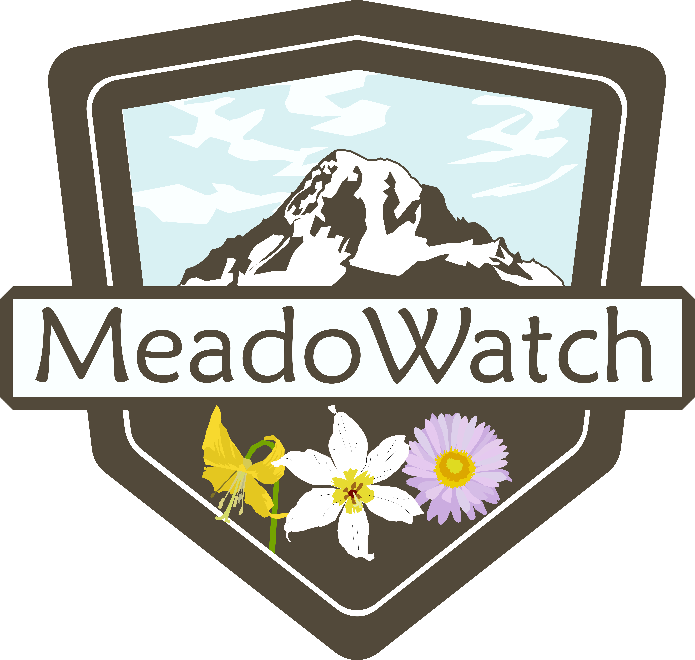
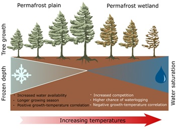
-
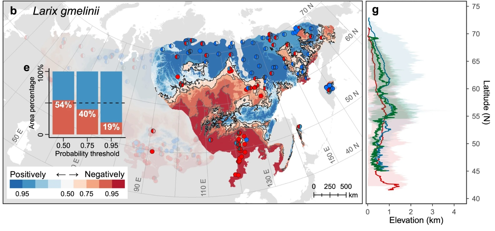
Tree phenology and climate change
Will earlier growing seasons change how forests respond to climate? Does a longer season compensate for rising temperature and aridity?
The work led by Xianliang Zhang opened this line: warming promotes boreal forest growth, but likely only temporarily, turning negative as permafrost degrades.
More recently, the study led by Wenqing Li found far greater drought sensitivity than expected once shifting growing seasons are accounted for. The Grephon team, led by Lizzie Wolkovich, is working on a review harmonising what we know.
2026
- Su J, Zheng W, Gou X, Hille Ris Lambers J, Altman J, Wang Y, Chu C, Zuidema P, Gu F & Manzanedo RD. Bedrock lithology determines forest demographic responses to drought. Nature Communications.Accepted
- Manzanedo RD, Visakorpi K, Bieger A, Temperli C, Portier J, Goetsch S & Hille Ris Lambers J. High climatic niche stability across life stages in Swiss forest tree species. Journal of Ecology.Accepted
- Hille Ris Lambers J, Bektas B, Torres A, Manzanedo RD & Feeley K. Elevational range shifts of trees in response to a changing climate. Annual Review of Ecology, Evolution and Systematics.Accepted
- Wu Y, Rademacher T, Liu H, Manzanedo RD, Lian B, Yu S, Guo Z, Du M & Zhang X. Balancing individual growth and stand carbon dynamics: optimizing age-dependent density management for Larix principis-rupprechtii plantations in semi-humid to semi-arid regions. Journal of Forestry Research.
2025
- Wolkovich EM, Ettinger AK, Chin A, Chamberlain CJ, Baumgarten F, Pradhan K, Manzanedo RD & Hille Ris Lambers J. Why longer seasons with climate change may not increase tree growth. Nature Climate Change.
- Vitali V, Jevšenak J, Fonti M, Manzanedo RD, Walthert L, von Arx G, Holloway-Phillips M, Treydte K, Zweifel R & Saurer M. Disentangling soil and atmospheric drought effects with intra-annual δ¹³C patterns in tree rings. Tree Physiology.
- Zuidema P & the Tropical Tree-Ring Network (incl. Manzanedo RD). Pantropical tree rings show small effects of drought on stem growth. Science.In press
- Liao J, Zhang X, Chen X, Du M, Zheng J, Wu Y, Li W & Manzanedo RD. Slope gradient mediates age-dependent radial growth and drought resistance of planted larch along elevation gradients. Forest Ecosystems.In press
- Chin AR, Gessler A, Guzmán-Delgado P, Manzanedo RD, Saurer M & Hille Ris Lambers J. Rainwater uptake in conifer twigs: five experiments tell a story of absorption, storage and transport. Journal of Experimental Botany.
- Groenendijk P & the Tropical Tree-Ring Network (incl. Manzanedo RD). The importance of tropical tree-ring chronologies for global change research. Quaternary Science Reviews.
2024
- Manzanedo RD, Chin AR, Ettinger A, Pederson N, Pradhan K, Guiterman CH, Su J, Baumgarten F & Hille Ris Lambers J. Moving ecological tree-ring big data forwards: limitations, data integration and multidisciplinarity. Science of the Total Environment.
- Su J, Gou X, Hille Ris Lambers J, Zhang DD, Zheng W, Xie M & Manzanedo RD. Increasing ENSO variability synchronizes tree growth in subtropical forests. Agricultural and Forest Meteorology 345: 109830.
- Visakorpi K, Manzanedo RD, Görlich A, Schiendorfer K, Altermatt Bieger AA, Gates E & Hille Ris Lambers J. Leaf-level resistance to frost, drought and heat covaries across European temperate tree seedlings. Journal of Ecology 112: 559–574.
- Zhang X, Manzanedo RD, Xu G & Lapenas AG. Achieving Sustainable Development Goal 13: resilience and adaptive capacity of temperate and boreal forests under climate change. Frontiers in Forests and Global Change 7: 1356686.
2023
- Zhang X, Rademacher T, Liu H, Wang L & Manzanedo RD. Fading regulation of diurnal temperature ranges on drought-induced growth loss for drought-tolerant tree species. Nature Communications 14: 6916.
- Li W, Manzanedo RD, Jian Y, Ma W, Du E, Zhao S, Rademacher T, Dong M, Xu H, Kang X, Wang J, Cui X & Pederson N. Reassessment of growth–climate relations indicates the potential for decline across Eurasian boreal larch forests. Nature Communications 14: 3358.
- Cao Z, Zhang J, Gou X, Wang Y, Sun Q, Yang J, Manzanedo RD & Pederson N. Increasing forest carbon sinks in the cold and arid northeastern Tibetan Plateau. Science of the Total Environment 905: 167168.